Interacting with the Mastodon API from R
using the R package rtoot
David Schoch
Introduction
about me


about today
- What is Mastodon?
- Research with data from Mastodon
- The R package
rtoot
What is Mastodon? 🦣
mastodon is (not) an open source twitter clone
Mastodon is a software to host microblogging social networking sites
tweets (280 char) → toots (500 char)
retweet → boost
like → favorite
quote tweet → 🚫
But
it’s not a single application!
it’s a distributed network of servers that interoperate
servers form a large decentralized federation
no ads, no insentives for “going viral”, no “algorithms”
centralized/federated/distributed

image from https://docs.joinmastodon.org/
centralized: Twitter, Facebook, Instagram
federated: Email, phone networks, physical mail
distributed: BitTorrent
Why does decentralization matter?
- reduced operating costs ⇒ no need for big monetization schemes
- servers don’t need to grow beyond their financial capacity
- more resilient to censorship (positive/negative)
- more control over your own data
The Fediverse
The fediverse (“federated universe”) is the name for all websites that can communicate with each other over ActivityPub and the World Wide Web.
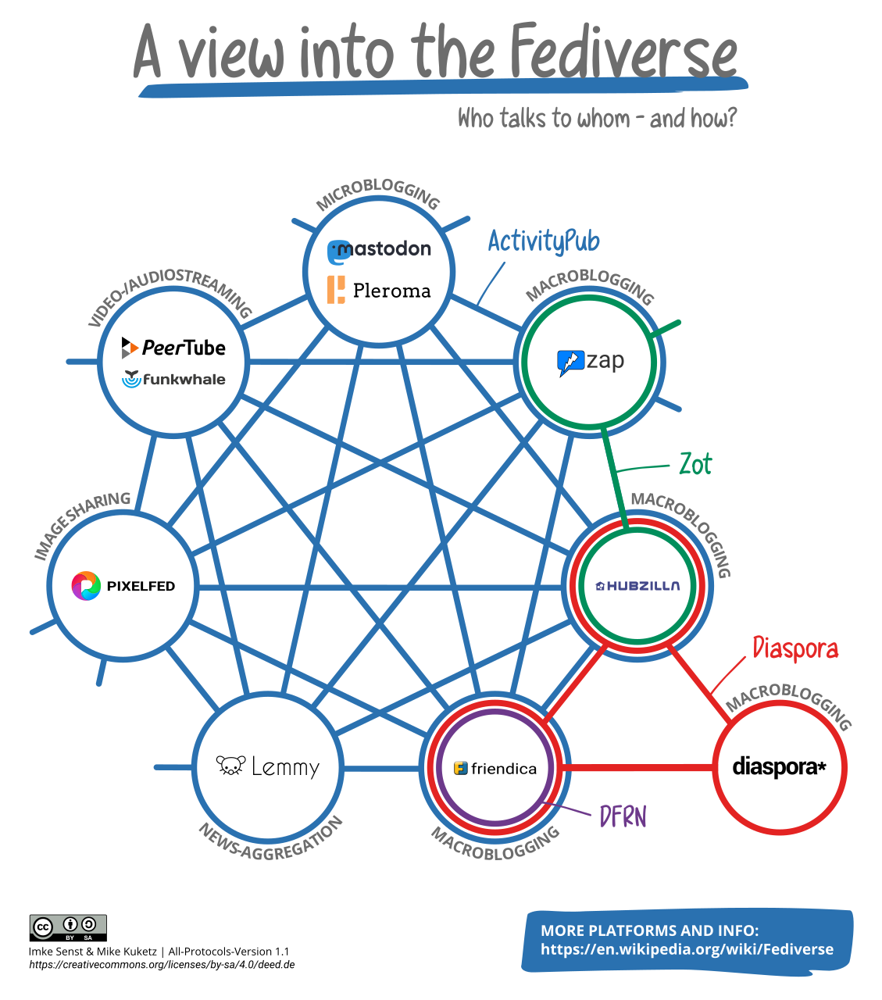
But wait, there is more
There is a Fediverse alternative for almost anything
History of Mastodon
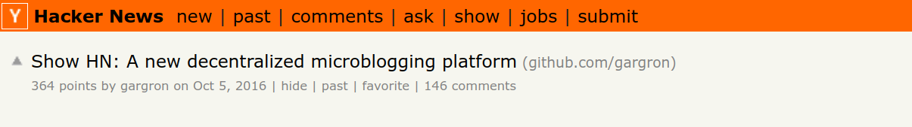
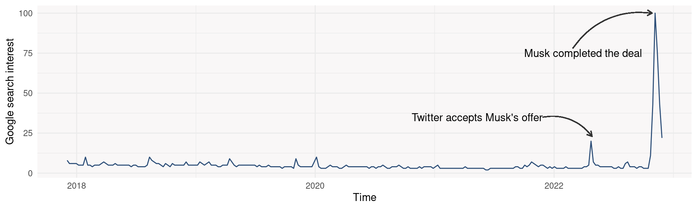
Mastodon instances
A Mastodon instance is a server running Mastodon
anyone can start a Mastodon instance
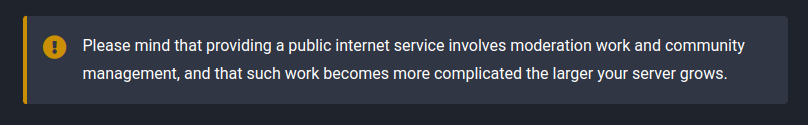
“Fun Fact”
Gab and Truth Social are technically also Mastodon instances
Mastodon instances
Get all instances via instances.social
Code
# A tibble: 16,400 × 23
id name updat…¹ check…² uptime up dead version ipv6 https…³ https…⁴
<chr> <chr> <chr> <chr> <int> <lgl> <lgl> <chr> <lgl> <int> <chr>
1 59067… mast… 2022-1… 2022-1… 1 TRUE FALSE 4.0.2 FALSE 5 "F "
2 58f0c… pawo… 2022-1… 2022-1… 1 TRUE FALSE 3.3.3 FALSE 5 "F "
3 58edf… mstd… 2022-1… 2022-1… 1 TRUE FALSE 3.5.1 TRUE 10 "E "
4 58e38… mast… 2022-1… 2022-1… 1 TRUE FALSE 3.4.6 TRUE 10 "E "
5 5f283… mast… 2022-1… 2022-1… 1 TRUE FALSE 4.0.2 FALSE 5 "F "
6 59d93… coun… 2022-1… 2022-1… 1 TRUE FALSE 2.8.0 TRUE 5 "F "
7 637b3… mstd… 2022-1… 2022-1… 1 TRUE FALSE 4.0.2 TRUE 5 "F "
8 5c9d4… mas.… 2022-1… 2022-1… 1 TRUE FALSE 4.0.2 TRUE 5 "F "
9 604db… mast… 2022-1… 2022-1… 1 TRUE FALSE 4.0.2 TRUE 5 "F "
10 637b3… gc2.… 2022-1… 2022-1… 1 FALSE FALSE 3.5.3 TRUE 5 "F "
# … with 16,390 more rows, 12 more variables: obs_score <int>, obs_rank <chr>,
# users <int>, statuses <int>, connections <chr>, open_registrations <lgl>,
# thumbnail <chr>, thumbnail_proxy <chr>, active_users <int>, email <chr>,
# admin <chr>, added_at <chr>, and abbreviated variable names ¹updated_at,
# ²checked_at, ³https_score, ⁴https_rankMastodon Instances
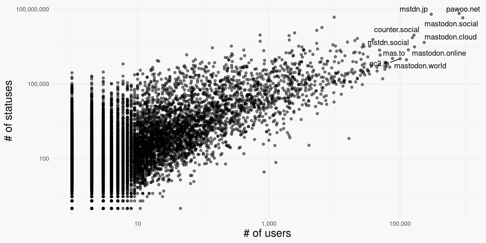Links
- fedi.tips and mastodon.help
- blog post from Danielle Navarro
- some stats
Research with Mastodon Data
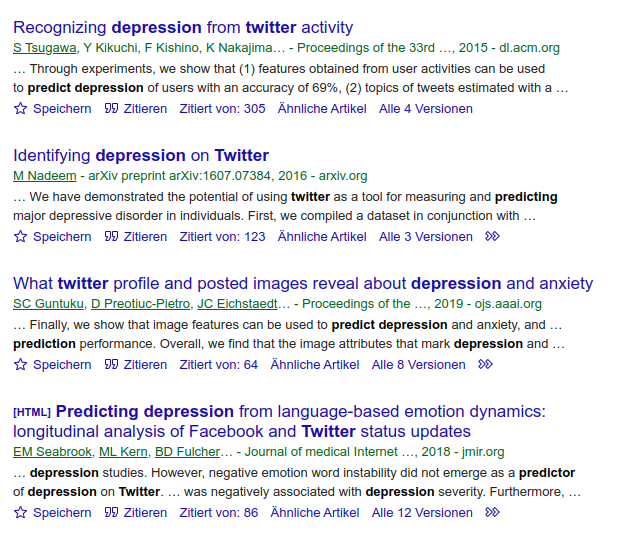 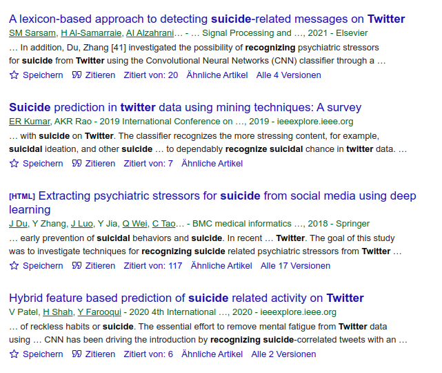

Terms of Service
Every instance has its own Terms of Service
Who is on/coming to Mastodon?
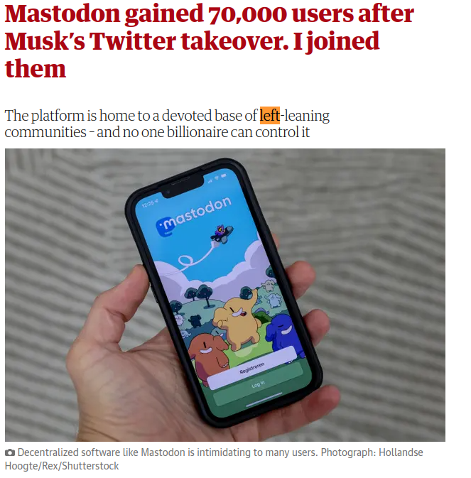 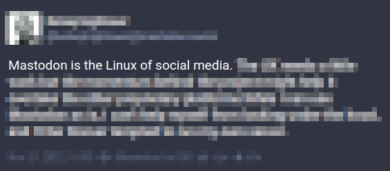
Controversies (Part 1)
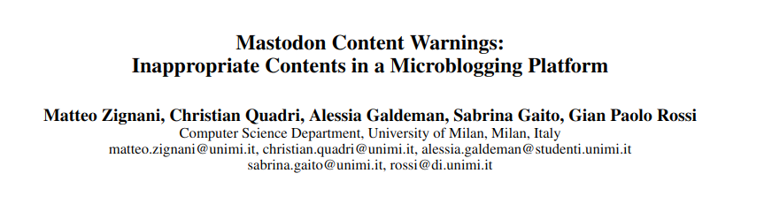
Controversies (Part 2)
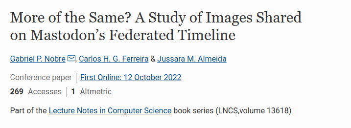
Recommendations
- Check the ToS of all instances you gather data from
- Discard data from instances that do not allow research
- Don’t publish datasets as is (if even)
- Don’t use third party APIs with the data
- respect #nobot
- understand community norms
- To be sure, get ethical approval
The R package rtoot
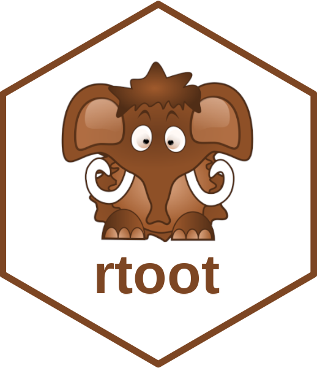
Development
repository created: 2022-11-05 21:25:06 CET
submitted to CRAN: 2022-11-11 16:49:16 CET

Acknowledgment
Co-author
Chung-hong Chan (CSS department, team TSA)
many many lines of code and ALL unit tests
Contributor
Johannes Gruber (Vrije Universiteit Amsterdam)
initial authentication code
Why rtoot?
a post on twitter: tweet
a post on Mastodon: toot (prior to 15 November 2022 😢)
R package for twitter: rtweet
R package for Mastodon: 🤔
Install
CRAN version (0.2.0)
Dev version (0.2.0.9000)
(Includes bugfixes and new minor functionality)
Authentication
API calls can be made anonymously, with a client, or user token.
The function guides you through the process of authentication
By default, the token is stored in a directory R has determined to make sense for you and it is called “rtoot_token.rds”.
You do not need to worry about it if you are only using rtoot on your local machine and you are only using one token.
Consult the vignette for more advanced authentication options
Overview of functions
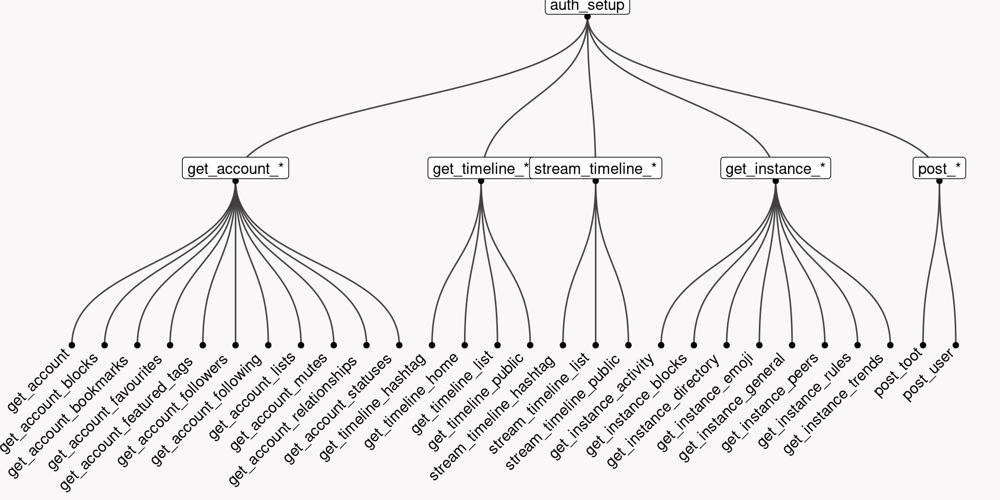account information
All calls need a user id, which can only be obtained by searching
for the account
# A tibble: 1 × 21
id usern…¹ acct displ…² locked bot disco…³ group created_at
<chr> <chr> <chr> <chr> <lgl> <lgl> <lgl> <lgl> <dttm>
1 10930243… schoch… scho… David … FALSE FALSE FALSE FALSE 2022-11-07 00:00:00
# … with 12 more variables: note <chr>, url <chr>, avatar <chr>,
# avatar_static <chr>, header <chr>, header_static <chr>,
# followers_count <int>, following_count <int>, statuses_count <int>,
# last_status_at <dttm>, fields <list>, emojis <I<list>>, and abbreviated
# variable names ¹username, ²display_name, ³discoverableaccount information
Rows: 1
Columns: 21
$ id <chr> "109302436954721982"
$ username <chr> "schochastics"
$ acct <chr> "schochastics"
$ display_name <chr> "David Schoch"
$ locked <lgl> FALSE
$ bot <lgl> FALSE
$ discoverable <lgl> FALSE
$ group <lgl> FALSE
$ created_at <dttm> 2022-11-07
$ note <chr> "<p>Team lead for "Transparent Social Analytics&q…
$ url <chr> "https://fosstodon.org/@schochastics"
$ avatar <chr> "https://cdn.fosstodon.org/accounts/avatars/109/302/43…
$ avatar_static <chr> "https://cdn.fosstodon.org/accounts/avatars/109/302/43…
$ header <chr> "https://cdn.fosstodon.org/accounts/headers/109/302/43…
$ header_static <chr> "https://cdn.fosstodon.org/accounts/headers/109/302/43…
$ followers_count <int> 530
$ following_count <int> 102
$ statuses_count <int> 52
$ last_status_at <dttm> NA
$ fields <list> [<tbl_df[3 x 3]>]
$ emojis <I<list>> account relations
id must be your own account
any account id
Example
Rows: 1
Columns: 5
$ id <chr> "6444"
$ name <chr> "rstats"
$ url <chr> "https://fosstodon.org/@schochastics/tagged/rstats"
$ statuses_count <chr> "21"
$ last_status_at <chr> "2022-12-14"# A tibble: 5 × 21
id usern…¹ acct displ…² locked bot disco…³ group created_at
<chr> <chr> <chr> <chr> <lgl> <lgl> <lgl> <lgl> <dttm>
1 10942746… hadley… hadl… Hadley… FALSE FALSE TRUE FALSE 2022-11-29 00:00:00
2 10947327… German… Germ… German… FALSE FALSE TRUE FALSE 2022-12-07 00:00:00
3 10947158… vtraag vtra… Vincen… FALSE FALSE FALSE FALSE 2022-12-07 00:00:00
4 10937243… yoyoel yoyo… Yoel R… FALSE FALSE TRUE FALSE 2022-11-19 00:00:00
5 10943164… GESIS GESI… GESIS FALSE FALSE TRUE FALSE 2022-11-17 00:00:00
# … with 12 more variables: note <chr>, url <chr>, avatar <chr>,
# avatar_static <chr>, header <chr>, header_static <chr>,
# followers_count <int>, following_count <int>, statuses_count <int>,
# last_status_at <dttm>, fields <I<list>>, emojis <I<list>>, and abbreviated
# variable names ¹username, ²display_name, ³discoverableExample
Rows: 20
Columns: 29
$ id <chr> "109511522860009258", "109499560815557081", "10…
$ uri <chr> "https://fosstodon.org/users/schochastics/statu…
$ created_at <dttm> 2022-12-14 10:20:27, 2022-12-12 07:38:20, 2022…
$ content <chr> "<p>Still cannot believe my approach worked<br …
$ visibility <chr> "public", "public", "public", "public", "public…
$ sensitive <lgl> TRUE, TRUE, TRUE, TRUE, TRUE, FALSE, TRUE, TRUE…
$ spoiler_text <chr> "Day 14 - Advent of Code 2022", "Day 12 - Adven…
$ reblogs_count <int> 0, 0, 0, 0, 0, 5, 1, 0, 0, 0, 0, 0, 0, 1, 16, 0…
$ favourites_count <int> 2, 2, 2, 2, 1, 6, 4, 3, 2, 0, 5, 5, 2, 8, 29, 1…
$ replies_count <int> 1, 0, 2, 0, 0, 0, 0, 1, 0, 0, 0, 1, 0, 1, 1, 1,…
$ url <chr> "https://fosstodon.org/@schochastics/1095115228…
$ in_reply_to_id <chr> NA, NA, NA, NA, NA, NA, NA, NA, NA, "1094570466…
$ in_reply_to_account_id <chr> NA, NA, NA, NA, NA, NA, NA, NA, NA, "1093370445…
$ language <chr> "en", "en", "en", "en", "en", "en", "en", "en",…
$ text <lgl> NA, NA, NA, NA, NA, NA, NA, NA, NA, NA, NA, NA,…
$ application <I<list>> , , , , , , , , , , , , , , , , , , ,
$ poll <I<list>> , , , , , , , , , , , , , , , , , , ,
$ card <I<list>> , https://...., , …
$ account <list> [<tbl_df[1 x 21]>], [<tbl_df[1 x 21]>], [<t…
$ reblog <I<list>> , , , , , , , , , , , , , , , , , , ,
$ media_attachments <I<list>> c("10951...., c("10949...., c("10949...., c…
$ mentions <I<list>> , , , …
$ tags <I<list>> c("rstat...., c("rstat...., c("rstat...., c…
$ emojis <I<list>> , , , , , , , , , , , , , , , , , , ,
$ favourited <lgl> FALSE, FALSE, FALSE, FALSE, FALSE, FALSE, F…
$ reblogged <lgl> FALSE, FALSE, FALSE, FALSE, FALSE, FALSE, F…
$ muted <lgl> FALSE, FALSE, FALSE, FALSE, FALSE, FALSE, F…
$ bookmarked <lgl> FALSE, FALSE, FALSE, FALSE, FALSE, FALSE, F…
$ pinned <lgl> FALSE, FALSE, FALSE, FALSE, FALSE, FALSE, FALSE…Parsing content
content is given in html format
[1] "<p>I m always happy when I can solve one of these with a graph. This time, the solution was distances on a lattice graph.</p><p>code: <a href=\"https://github.com/schochastics/adventofcode/blob/main/2022/day12.R\" target=\"_blank\" rel=\"nofollow noopener noreferrer\"><span class=\"invisible\">https://</span><span class=\"ellipsis\">github.com/schochastics/advent</span><span class=\"invisible\">ofcode/blob/main/2022/day12.R</span></a><br /><a href=\"https://fosstodon.org/tags/Rstats\" class=\"mention hashtag\" rel=\"tag\">#<span>Rstats</span></a> <a href=\"https://fosstodon.org/tags/AdventOfCode\" class=\"mention hashtag\" rel=\"tag\">#<span>AdventOfCode</span></a></p>"Parsing content
[1] "I m always happy when I can solve one of these with a graph. This time, the solution was distances on a lattice graph.\n\ncode: https://github.com/schochastics/adventofcode/blob/main/2022/day12.R\n#Rstats #AdventOfCode"understanding timelines
home timeline: all statuses of accounts you follow
local timeline: all statuses of an instance
list timeline: all statuses of a list of accounts
hashtag timeline: all statuses including a specific hashtag
public statuses: all statuses of accesible Mastodon servers
Examples
local timeline
public hashtag timeline
local hashtag timeline
public timeline
Special parameters
get statuses older than…
- cannot specify a date/time
- need a hidden id as starting point
get statuses younger than…
same as above but with since_id
exception
followers work with user_id
Pagination
one API call returns 40 statuses
rtoot (>= 0.2.0) automatically paginates if limit>40
functions always return full pages.
Ratelimits
300 calls in 5 minutes
# A tibble: 1 × 5
rate_limit rate_remaining rate_reset max_id min_id
<chr> <chr> <dttm> <chr> <chr>
1 300 292 2022-12-14 16:50:00 109513049014780913 109513050783…The package checks rate limits automatically
If retryonratelimit = TRUE,
a function “sleeps” untill calls are available again.
Streaming
get everything that is posted
stream a specific hashtag
- timeout: for how many seconds to stream
- file_name: where streamed data is stored (if not specified a temp file is used)
24 hour streaming test
From 2022-12-11 10:17 to 2022-12-12 10:17
streamed toots: 95508
(Twitter: ~500mio/day, after Musk took over: ~400mio/day)
24 hour streaming test: Instances
| instance | n |
|---|---|
| mastodon.social | 12016 |
| mstdn.social | 3382 |
| botsin.space | 3216 |
| mastodonapp.uk | 2604 |
| mastodon.online | 2530 |
unique instances: 2959
Interlude: extract instances from statuses
The statuses include a list column account which holds all account data.
The acct field has the form user_name@instance
accounts <- toots$account
instances <- map_chr(accounts,function(x) str_remove(str_extract(x$acct,"@.*"),"@"))
head(instances)[1] "ruhr.social" "mastodon.social" "fediscience.org" "mastodon.gal"
[5] "nobigtech.es" "mastodon.scot" but:
If the user is from the same instance as your token, OR you are streaming locally, then @instance is not shown. Any value that is NA in the above vector instances is thus actually an account from fosstodon.org (my instance).
Interlude: extract instances from statuses
Better solution:
extract instance from URL
24 hour streaming test: Hashtags
24 hour streaming test: Languages
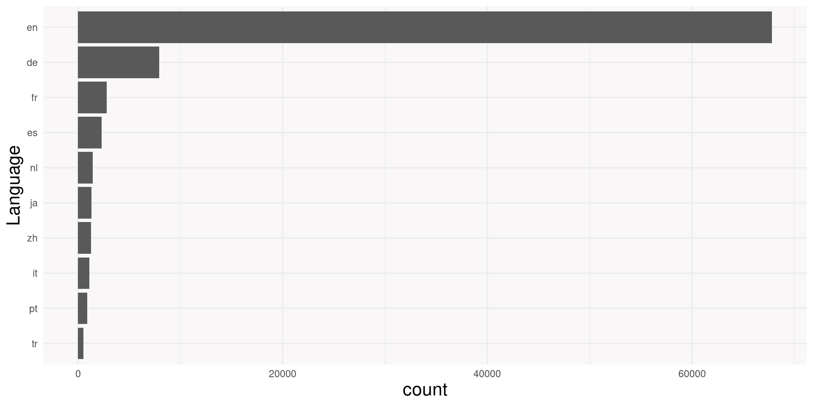24 hours streaming test: misc
obviously you only get public posts
24 hours streaming test: observations
- returns toots from outside the time window
filter(toots,created_at<as.POSIXct("2022-12-11 10:10:00",tz = "UTC")) |>
pull(created_at) |> sort() |> head(n = 5)[1] "2022-04-17 02:04:56 UTC" "2022-04-17 02:04:56 UTC"
[3] "2022-04-17 02:04:56 UTC" "2022-04-29 15:23:17 UTC"
[5] "2022-07-02 19:45:34 UTC"writing to file slows down over time.
better stream 24 1 hour windowsrandom errors can occur at any time
not sure if the stream includes 100% of the data (Twitter: 1%)
Instances: activity
get activity of an instance in the last three months
# A tibble: 12 × 4
week statuses logins registrations
<dttm> <int> <int> <int>
1 2022-12-14 15:51:58 68384 36754 2726
2 2022-12-07 15:51:58 619567 102068 12011
3 2022-11-30 15:51:58 685353 97169 913
4 2022-11-23 15:51:58 798553 111300 1647
5 2022-11-16 15:51:58 1059889 172336 45816
6 2022-11-09 15:51:58 952856 119902 14252
7 2022-11-02 15:51:58 689168 109316 5342
8 2022-10-26 15:51:58 450355 106426 58680
9 2022-10-19 15:51:58 166309 24617 2417
10 2022-10-12 15:51:58 161111 23891 1980
11 2022-10-05 15:51:58 158205 24582 2517
12 2022-09-28 15:51:58 149615 21528 504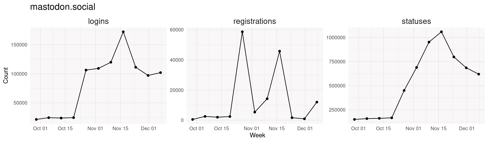
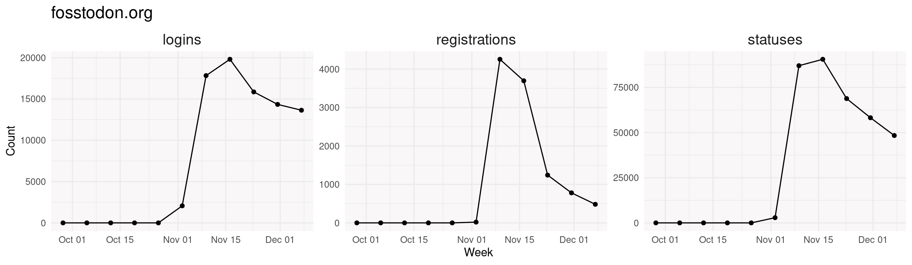
Instances: blocked domains
# A tibble: 173 × 4
domain digest sever…¹ comment
<chr> <chr> <chr> <chr>
1 bgzashtita.es 9c74ca7a36db36bf782a264ce69033cca4317c416… silence Misinf…
2 brighteon.social 0be5721be2346e0b892e6cc0db706b6b950a0d215… silence Conspi…
3 bsd.moe e19231735923fbb5ce6d73986339b08e5dad96c75… silence Harass…
4 fr13nd5.com 86811acd84b7c3124aead2125fa22ae0a8f617517… silence Misinf…
5 freeatlantis.com 23414c6b236b245c662efa05db8662743261e08cf… silence Misinf…
6 freezepeach.xyz 079978fa420e3804995892d3da797cba45ab926ed… silence Harass…
7 krdtube.org e454341c985b667c14302990019e0045dde64a1de… silence Misinf…
8 mstdn.foxfam.club ae63b259151df535f1d408367458f52f8aaecbf48… silence Third-…
9 noagendasocial.com 03862ed4050b1d6c7b914e369284d75f9cffd1728… silence Harass…
10 pawoo.net e7c641cf9cd8b5c4513e22d0dfd3f914835a16bd4… silence Inappr…
# … with 163 more rows, and abbreviated variable name ¹severity# A tibble: 3 × 2
comment n
<chr> <int>
1 Hate speech 51
2 Third-party bots 44
3 Inappropriate content 27Instances: emojis
# A tibble: 745 × 5
shortcode url stati…¹ visib…² categ…³
<chr> <chr> <chr> <lgl> <chr>
1 0ad https://cdn.fosstodon.org/c… https:… TRUE <NA>
2 AntennaPod https://cdn.fosstodon.org/c… https:… TRUE <NA>
3 BlobCatGoogly https://cdn.fosstodon.org/c… https:… TRUE Blobcat
4 Clojure https://cdn.fosstodon.org/c… https:… TRUE <NA>
5 GrapheneOS https://cdn.fosstodon.org/c… https:… TRUE <NA>
6 NSFW_Stamp https://cdn.fosstodon.org/c… https:… TRUE <NA>
7 StarfleetInsignia https://cdn.fosstodon.org/c… https:… TRUE <NA>
8 ablobcatangel https://cdn.fosstodon.org/c… https:… TRUE Blobcat
9 ablobcatattention https://cdn.fosstodon.org/c… https:… TRUE Blobcat
10 ablobcatattentionreverse https://cdn.fosstodon.org/c… https:… TRUE Blobcat
# … with 735 more rows, and abbreviated variable names ¹static_url,
# ²visible_in_picker, ³category


Instances: peers and rules
[1] 29344# A tibble: 12 × 2
id text
<chr> <chr>
1 2 "Do not use slurs or racist, sexist, homophobic, transphobic, ableist …
2 3 "Do not harass anyone, participate in group harassment of anyone, or o…
3 4 "Do not be intentionally antagonistic. A post or reply designed to pro…
4 5 "Do not post adult content, including pictures containing nudity, or u…
5 6 "Do not post spam. Toots that are nothing other than a link and/or con…
6 7 "Do not use automated tools to toot without participating in the commu…
7 8 "Do not “shitpost” - while humorous posts are allowed, and actually en…
8 9 "Do not post about inflammatory, controversial subjects without a Cont…
9 10 "Do not engage in name calling, ad hominem attacks, or any other unciv…
10 11 "Do not tone police. Toots may violate the standards of civility we se…
11 12 "Do not toot in languages other than English (which makes moderation p…
12 13 "Do not debate moderation actions in public toots. If you disagree wit…Instances: trends
# A tibble: 70 × 5
name url day accou…¹ uses
<chr> <chr> <date> <int> <int>
1 songsormoviesaboutfleas https://fosstodon.org/tags/… 2022-12-14 36 81
2 songsormoviesaboutfleas https://fosstodon.org/tags/… 2022-12-13 0 0
3 songsormoviesaboutfleas https://fosstodon.org/tags/… 2022-12-12 0 0
4 songsormoviesaboutfleas https://fosstodon.org/tags/… 2022-12-11 0 0
5 songsormoviesaboutfleas https://fosstodon.org/tags/… 2022-12-10 0 0
6 songsormoviesaboutfleas https://fosstodon.org/tags/… 2022-12-09 0 0
7 songsormoviesaboutfleas https://fosstodon.org/tags/… 2022-12-08 0 0
8 waterfallwednesday https://fosstodon.org/tags/… 2022-12-14 40 43
9 waterfallwednesday https://fosstodon.org/tags/… 2022-12-13 2 2
10 waterfallwednesday https://fosstodon.org/tags/… 2022-12-12 1 1
# … with 60 more rows, and abbreviated variable name ¹accounts [1] "songsormoviesaboutfleas" "waterfallwednesday"
[3] "pmqs" "TombTuesday"
[5] "tuesday" "ArgCro"
[7] "ThickTrunkTuesday" "fbi"
[9] "openweb" "kyiv" Post a toot
on some instances, automated posting is frowned upon
(some reports of being “shadow banned”)
- posts can be scheduled using the parameter
scheduled_at(5 minutes in future) spoiler_textis used as a content warning (careful with terminology!)
User actions
perform actions on behalf of a user (your own account)
Advanced: Go beyond Mastodon
you can (now) get data from outside Mastodon, but not every fediverse alternative works
# A tibble: 2 × 29
id uri created_at content visib…¹ sensi…² spoil…³ reblo…⁴
<chr> <chr> <dttm> <chr> <chr> <lgl> <chr> <int>
1 AQbSZH4lLtS… http… 2022-12-14 16:41:45 "<p><s… public FALSE "" 0
2 AQbSQg1pD3P… http… 2022-12-14 16:40:12 "<p><s… public FALSE "" 0
# … with 21 more variables: favourites_count <int>, replies_count <int>,
# url <chr>, in_reply_to_id <chr>, in_reply_to_account_id <chr>,
# language <lgl>, text <lgl>, application <I<list>>, poll <I<list>>,
# card <I<list>>, account <list>, reblog <I<list>>,
# media_attachments <I<list>>, mentions <list>, tags <I<list>>,
# emojis <I<list>>, favourited <lgl>, reblogged <lgl>, muted <lgl>,
# bookmarked <lgl>, pinned <lgl>, and abbreviated variable names …Error: something went wrong. Status code: 500Advanced: unsupported Endpoints
use endpoints not yet fully supported
notify<- rtoot(endpoint = "/api/v1/notifications",params = list())
purrr::map_chr(notify,function(x) x$type) [1] "favourite" "follow" "mention" "follow" "favourite" "follow"
[7] "follow" "favourite" "follow" "favourite" "follow" "favourite"
[13] "mention" "favourite" "mention" [1] "<p>Hey folks! We're so excited to see all the new faces around Fosstodon. With more members comes more traffic and more traffic means higher demands on our server. That being said, we've had to bump up our resources to accommodate the growth. </p><p>We've already had some generous members either begin donating or increase their monthly donation amount and we're very thankful for that. If you want to help us make sure our monthly overhead is covered, you can find out more, here: <a href=\"https://hub.fosstodon.org/support/\" target=\"_blank\" rel=\"nofollow noopener noreferrer\"><span class=\"invisible\">https://</span><span class=\"\">hub.fosstodon.org/support/</span><span class=\"invisible\"></span></a> </p><p>We appreciate all of you helping to make Fosstodon such an awesome place!</p>"Resources
- vignettes in R:
browseVignettes(package = "rtoot") - online documentation: https://schochastics.github.io/rtoot/
- report issues: https://github.com/schochastics/rtoot/issues
- these slides:
🦣